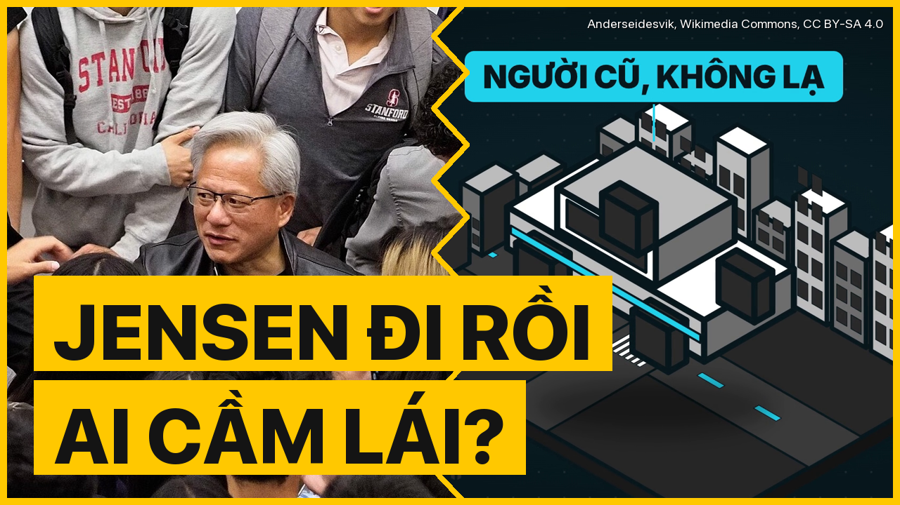
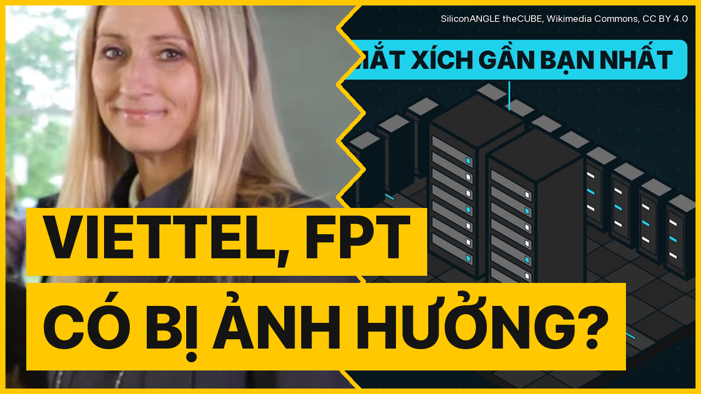
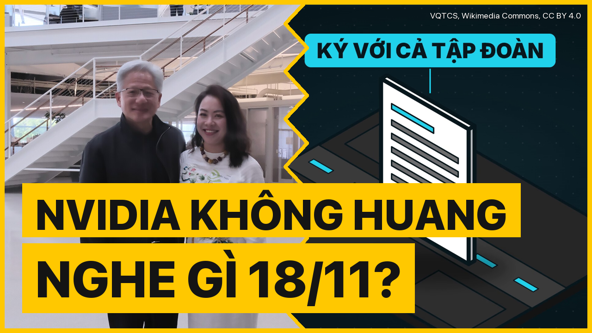

Duyệt 2 · 2026-11-13-huang-roi-nvidia
1 cảnh báo
- Cảnh báo: độ khô: điểm giám khảo trung bình 3.9 < 4.0
Video
Tiêu đề + thumbnail
Phương án 1

Jensen Huang rời Nvidia: ai cầm lái, khách hàng có bị gián đoạn?
Phương án 2

Jensen Huang rời ghế: khách hàng Nvidia ở Việt Nam ra sao?
Phương án 3

Bà Kress cầm lái Nvidia: rạng sáng 18/11 cần nghe gì?
Shorts
Mô tả
Ngày 12/11/2026, Nvidia báo tin ông Jensen Huang thôi làm giám đốc điều hành và rời hội đồng quản trị, có hiệu lực ngay. Video này không kể lại chuyện riêng, chỉ đọc giấy tờ: hồ sơ 8-K nộp SEC và thông cáo của Nvidia ghi gì, bà Colette Kress (quyền CEO kiêm giám đốc tài chính) và ông Harvey Jones (chủ tịch hội đồng quản trị đầu tiên của Nvidia) ngồi ở đâu, lời hứa "không gián đoạn" nghĩa là gì với khách hàng, kể cả Viettel, FPT Cloud và thỏa thuận Chính phủ Việt Nam ký với Nvidia năm 2024. Rạng sáng thứ Tư 18/11 giờ Việt Nam, Nvidia công bố kết quả quý III tài khóa 2027: video gợi ý hai câu đáng nghe nhất. Hai video trước của kênh về chuyện này: xem trong danh sách phát Nvidia của kênh. 👉 Bạn đoán hội đồng Nvidia sẽ mất mấy tháng để chọn CEO chính thức? Để lại một con số dưới bình luận. ⏱ Chương 0:00 Mở đầu: 33 năm và năm ngày 0:50 Hai tờ giấy, hai ngày liền nhau 2:23 Ai đang cầm lái Nvidia? 4:16 "Không gián đoạn" nghĩa là gì, người Việt đứng ở đâu 6:43 Hai việc cần ngóng: rạng sáng 18/11 8:21 Kết: cái gì còn treo 📎 Nguồn - Nvidia: thông cáo thay CEO (12/11/2026) — https://nvidianews.nvidia.com/news/nvidia-announces-ceo-transition (truy cập 2026-11-13) - SEC: hồ sơ 8-K của Nvidia (11/11/2026) — https://www.sec.gov/Archives/edgar/data/1045810/000104581026000082/nvda-20261111.htm (truy cập 2026-11-13) - Nvidia: thông cáo lịch họp quý III (28/10/2026) — https://nvidianews.nvidia.com/news/nvidia-sets-conference-call-for-third-quarter-financial-results-6928873 (truy cập 2026-11-13) - Yahoo Finance: lịch sử giá NVDA — https://finance.yahoo.com/quote/NVDA/history/ (truy cập 2026-11-13) - Yahoo Finance: dữ liệu giá chốt phiên 12/11 — https://query1.finance.yahoo.com/v8/finance/chart/NVDA?interval=1d&range=5d (truy cập 2026-11-13) - Báo Điện tử Chính phủ: Viettel vận hành siêu máy tính Nvidia (06/02/2026) — https://baochinhphu.vn/viettel-van-hanh-he-thong-sieu-may-tinh-cua-nvidia-dau-tien-tai-viet-nam-10226020615345696.htm (truy cập 2026-11-13) - Báo Điện tử Chính phủ: Chính phủ và Nvidia hợp tác (05/12/2024) — https://baochinhphu.vn/chinh-phu-viet-nam-va-nvidia-hop-tac-thanh-lap-trung-tam-nghien-cuu-va-phat-trien-trung-tam-du-lieu-ai-102241205191337156.htm (truy cập 2026-11-13) - FPT Cloud: bảng giá — https://fptcloud.com/en/pricing/ (truy cập 2026-11-13) - Số kênh tự tính (giờ Việt Nam, số năm, số ngày): công thức ghi trong kịch bản, đổi PT (UTC−8) sang UTC+7. 🖼 Ghi công ảnh - Ảnh: Anderseidesvik / Wikimedia Commons (CC BY-SA 4.0) - Ảnh: Coolcaesar / Wikimedia Commons (CC BY-SA 4.0) - Ảnh: Will Buckner / Wikimedia Commons (CC BY 2.0) - Ảnh: Carlos Delgado / Wikimedia Commons (CC BY-SA 3.0) - Ảnh: Arild Vågen / Wikimedia Commons (CC BY-SA 4.0) - Ảnh: LPS.1 / Wikimedia Commons (CC0) - Ảnh: SiliconANGLE theCUBE / Wikimedia Commons (CC BY 4.0) - Ảnh: 极客湾Geekerwan / Wikimedia Commons (CC BY 3.0) - Ảnh: NKSTTSSHNVN / Wikimedia Commons (CC BY-SA 4.0) - Ảnh: VGP/LT – Báo Điện tử Chính phủ - Ảnh: Pokiiri / Wikimedia Commons (CC BY-SA 4.0) - Ảnh: VGP/Nhật Bắc – Báo Điện tử Chính phủ - Ảnh: VQTCS / Wikimedia Commons (CC BY 4.0) Video phân tích dựa trên tài liệu công khai, không phải lời khuyên đầu tư.
Tags
Nvidia, Jensen Huang, Jensen Huang từ chức, Colette Kress, Harvey Jones, CEO Nvidia, Nvidia CEO mới, cổ phiếu Nvidia, NVDA, báo cáo quý Nvidia, Viettel siêu máy tính, DGX B200, FPT Cloud GPU, Nvidia Việt Nam, chip AI, tin công nghệ, Túi Tiền Người Việt